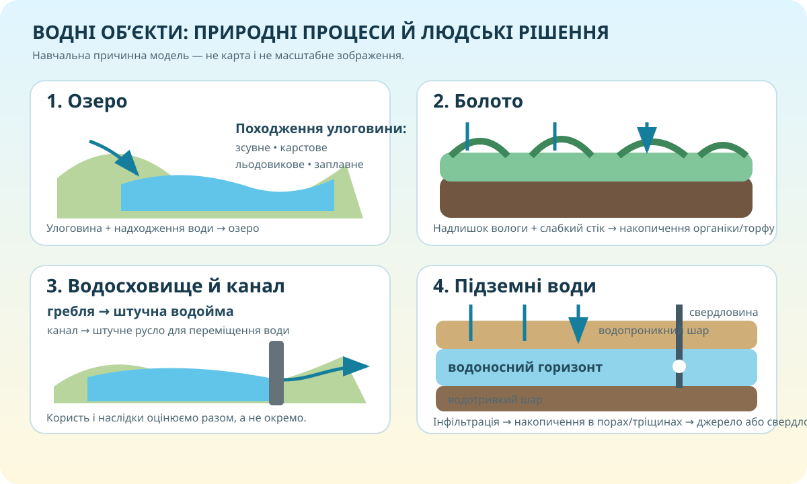

Водний детектив: хто тут «природний», а хто створений людиною?
А
Вода заповнила природну улоговину між гірськими схилами.
Б
Ділянка постійно перезволожена, стік слабкий, накопичується органічна речовина.
В
Русло прокладене людиною, щоб переміщувати воду між територіями.
Г
Вода міститься в порах і тріщинах гірських порід нижче поверхні.
Синевир: не «гарне озеро», а набір доказів

Доказ 1
Що на карті вказує на гірське положення?
Доказ 2
Чому форма водойми сама по собі ще не доводить походження улоговини?
Висновок
Яке джерело надійніше для факту про об’єкт: туристичний допис чи сайт нацпарку? Чому?
Озера схожі водою, але не історією
Натисніть на процес і передбачте, якою буде улоговина.
Болото — «зайва вода» чи природна інфраструктура?

Водосховище ≠ озеро, канал ≠ річка
Водосховище
Штучна водойма, де воду накопичують, часто за допомогою греблі.
Питання: яку природну течію або долину змінює створення водосховища?
Канал
Штучне русло, яким воду спрямовують за визначеним маршрутом.
Питання: чому канал може перетинати природні вододіли, а річка — ні?
Дилема
Що важливіше при оцінці гідроспоруди: лише користь для людей чи також зміна екосистем?
Чому вода не просто «провалюється в центр Землі»?
Модель
1. Опади просочуються крізь водопроникні породи.
2. Нижче вода може затримуватися над водотривким шаром.
3. Так формується водоносний горизонт; вода виходить джерелом або добувається свердловиною.
Перевірка механізму
Тепер збираємо систему понять
🏔️ Озеро
Природна водойма в замкненій улоговині. Походження улоговин різне — тому ключове питання не «як виглядає?», а «який процес створив заглиблення?»
🌿 Болото
Надмірно зволожена ділянка з болотними ґрунтами й рослинністю; за тривалого накопичення органіки може формуватися торф.
🏗️ Водосховище/канал
Антропогенні водні об’єкти: перший накопичує воду, другий переносить її штучним руслом.
💧 Підземні води
Вода в порах, тріщинах і пустотах гірських порід. Її залягання залежить від проникності шарів і рельєфу.
Відео: перевіряємо власну модель
Дивіться не пасивно
Зафіксуйте один факт, який підтверджує вашу модель, і один факт, який її уточнює.
Електронний курс ВШО ↗Перевірка: 10 запитань = 10 балів
Доведіть: болото — це частина водної системи, а не «порожня мокра земля»
C — Claim
E — Evidence
R — Reasoning
Міні-досьє одного водного об’єкта
Базовий рівень
Опрацюйте §27 та електронний курс. Оберіть одне озеро, болото, водосховище, канал або джерело/свердловину України. Запишіть: тип, місце, походження/спосіб створення, значення.
Дослідницький рівень
Додайте два надійні джерела, карту/координати й короткий CER: «Чому цей об’єкт важливий для своєї території?» Окремо позначте, що є фактом, а що — вашим висновком.